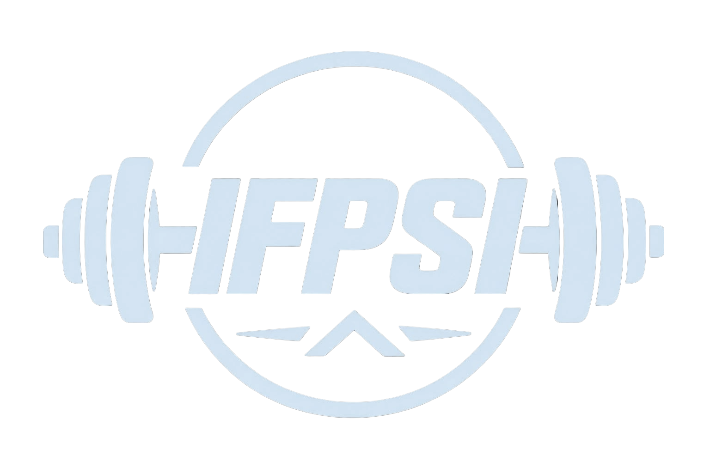
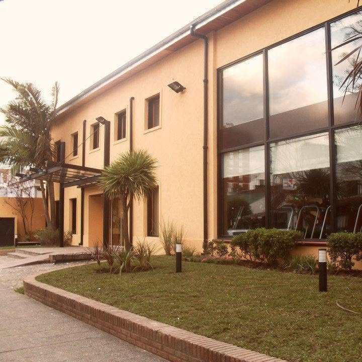

Personal Trainer
Formación orientada al entrenamiento y la planificación de rutinas adaptadas a diferentes objetivos.

En IFPSI nos dedicamos a la formación de profesionales preparados para desarrollarse en el ámbito de la actividad física, el fitness y el bienestar. Ofrecemos propuestas educativas que combinan conocimientos teóricos y prácticos para acompañar a nuestros estudiantes en su desarrollo profesional.

IFPSI es un instituto de formación profesional fundado en 2006 por una familia vinculada al deporte y al entrenamiento. A partir de su experiencia como deportistas y profesionales, sus fundadores decidieron crear un espacio dedicado a compartir conocimientos y formar nuevas generaciones de profesionales.
A lo largo de los años, el instituto fue ampliando su propuesta académica para ofrecer diferentes alternativas de formación relacionadas con el movimiento, la actividad física y el bienestar.
Conocé las propuestas de capacitación que forman parte de nuestra oferta académica.
Formación orientada al entrenamiento y la planificación de rutinas adaptadas a diferentes objetivos.
Propuesta centrada en el control corporal, la postura, la movilidad y el movimiento consciente.
Disciplica basada principalmente en ejercicios con el propio peso corporal, orientada al desarrollo de fuerza, coordinación, movilidad y control del cuerpo.
Actividad de entrenamiento cardiovascular sobre bicicleta estática, con diferentes niveles de intensidad.
Formación orientada al aprendizaje de técnicas básicas de boxeo, coordinación, desplazamientos y acondicionamiento físico.
Entrenamiento de alta intensidad que combina ejercicios para desarrollar fuerza, resistencia, coordinación y capacidad física.
Conocé en detalle cada propuesta, sus contenidos, modalidad y características.
Explorá nuestra oferta académica